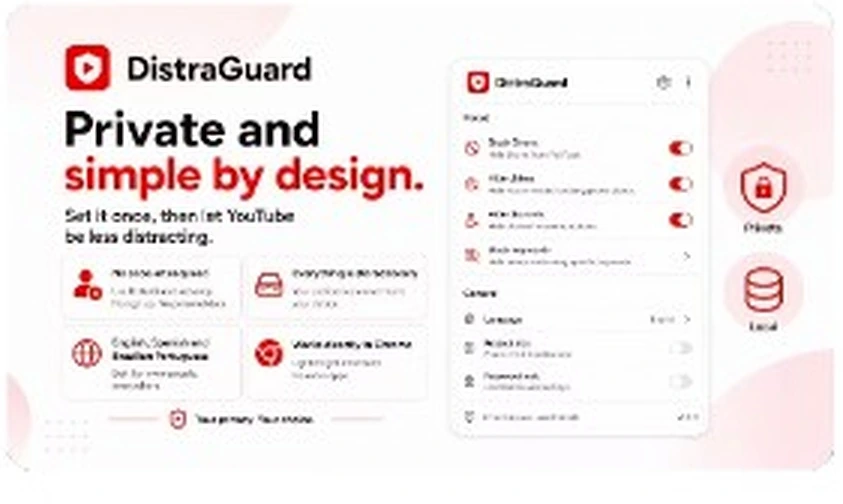
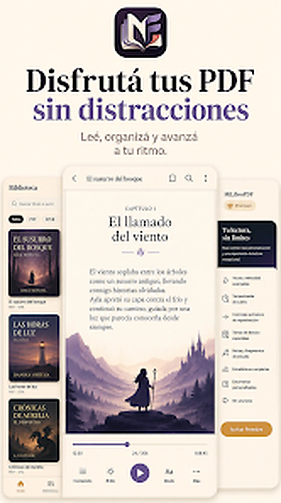
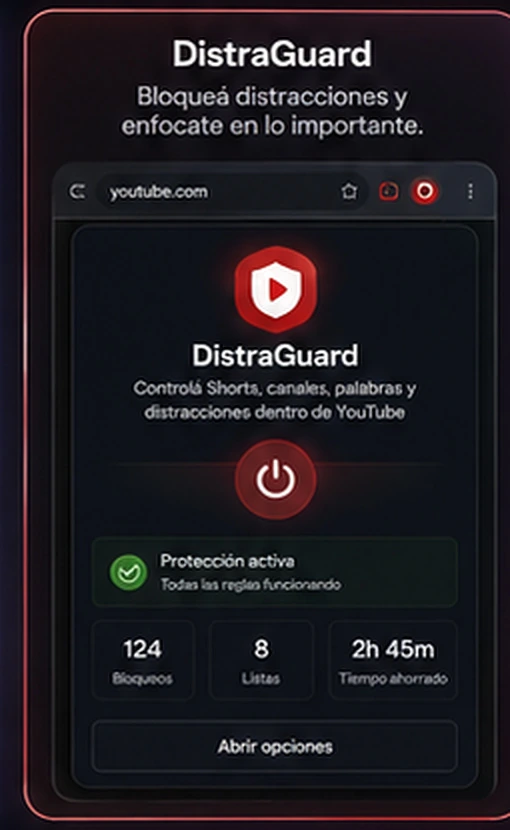
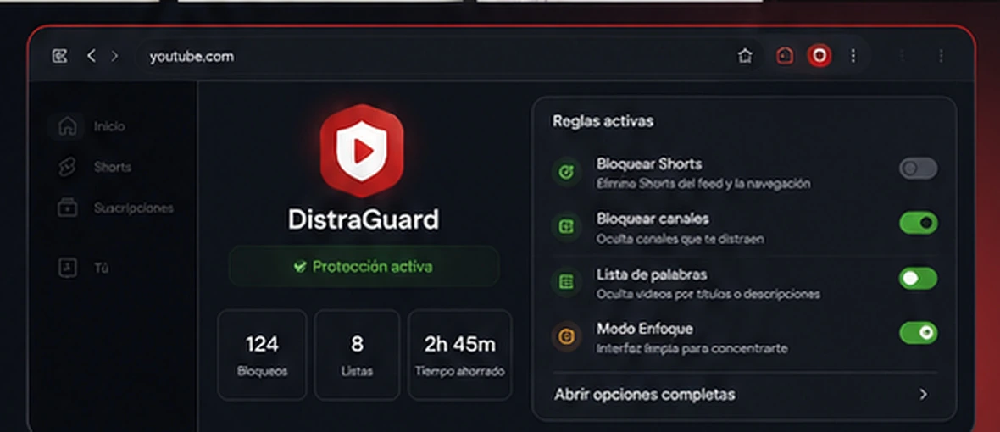

01 · Android
Aplicaciones Android
Apps funcionales, MVP, herramientas internas y productos para usuarios finales, con navegación clara, persistencia y preparación para publicación.
No vendemos un paquete cerrado. Elegimos el tipo de producto y la tecnología según el problema real.


Sin íconos gigantes ni ilustraciones genéricas: usamos productos y páginas reales como referencia visual.
Apps funcionales, MVP, herramientas internas y productos para usuarios finales, con navegación clara, persistencia y preparación para publicación.
Landing pages, sitios institucionales y experiencias responsive pensadas para presentar, captar consultas o vender.
Flujos que conectan formularios, respuestas, datos y acciones para reducir tareas repetitivas y ordenar mejor una operación.

Herramientas que agregan funciones dentro del navegador y se integran al flujo de trabajo del usuario.

Correcciones, rediseños, nuevas funciones y mejoras sobre una base que ya existe, sin reconstruir todo innecesariamente.
La mejor forma de explicar el tipo de trabajo es mostrar software existente.

Producto Android con lectura, navegación y funciones avanzadas.

Extensión de navegador publicada y utilizada en Chrome.

Diseño, prueba y corrección sobre interfaces que se usan de verdad.